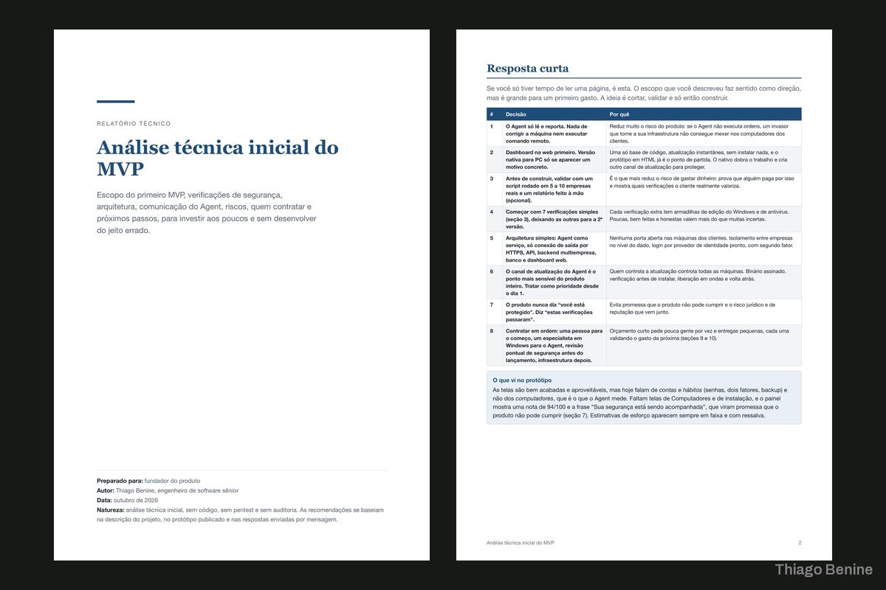
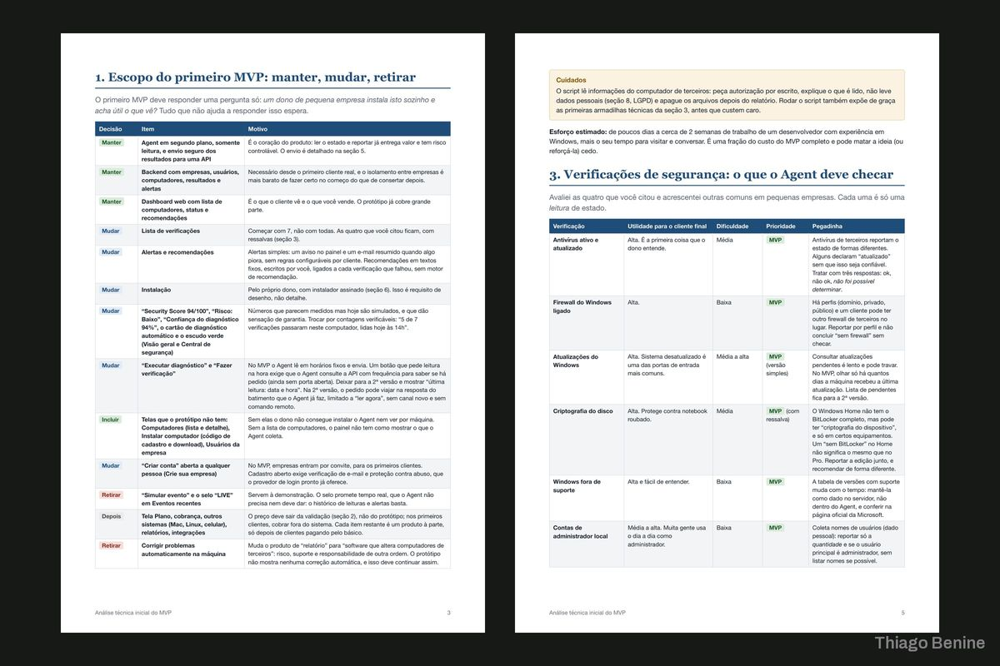
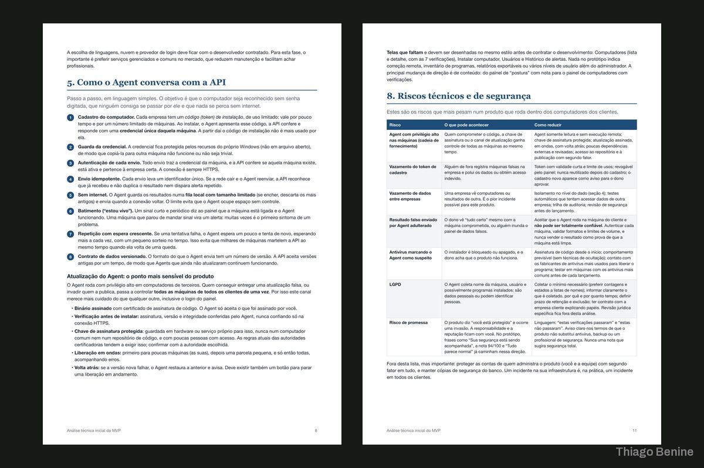
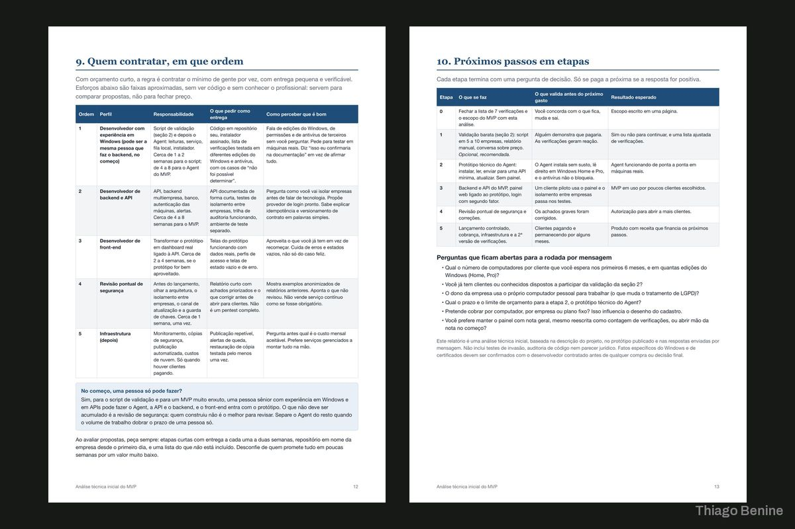

Análise técnica de MVP de cibersegurança
Relatório com diagnóstico, protótipo de telas e plano por etapas para um produto em fase inicial.





Sobre o projeto
Um empreendedor tinha a ideia de um produto de cibersegurança e precisava de orientação técnica antes de investir. O MVP foi analisado e virou um relatório organizado, com orientações técnicas, protótipo das telas principais e um planejamento por etapas para o desenvolvimento.
O que foi entregue
- Relatório técnico em PDF
- Protótipo das telas principais
- Plano de desenvolvimento por etapas
Avaliação do cliente
5,0 de 5
[...] entregou um relatório bem organizado, com orientações técnicas e um planejamento por etapas para o desenvolvimento do meu projeto.